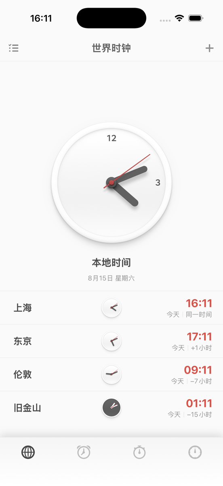
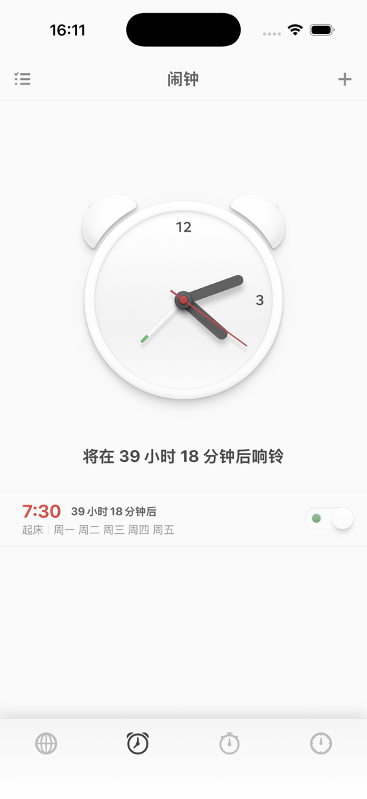
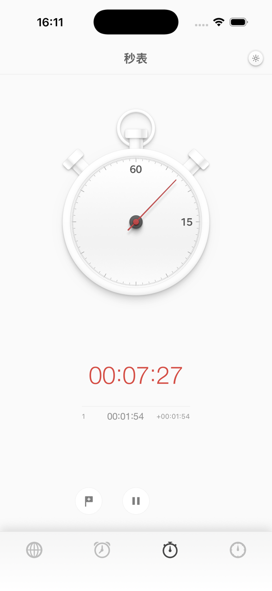
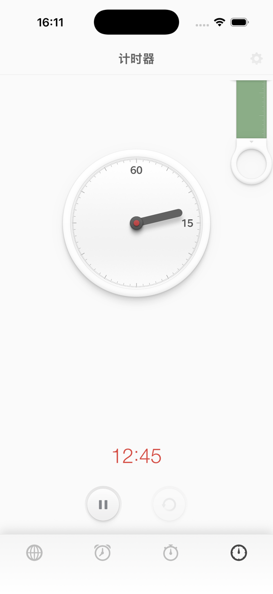

锤子时钟 iOS
Smartisan Clock iOS 是一个面向 iPhone 的非官方、非商业开源复刻项目。使用 SwiftUI 与 AlarmKit，重现世界时钟、闹钟、机械秒表，以及经典下拉环和新版滑尺计时器。
界面预览




下载与安装
项目提供源码和未签名 IPA。未签名 IPA 不能直接安装，需要使用自己的 Apple Account 通过 Xcode 或其他自签工具重新签名。前往 Release 下载。